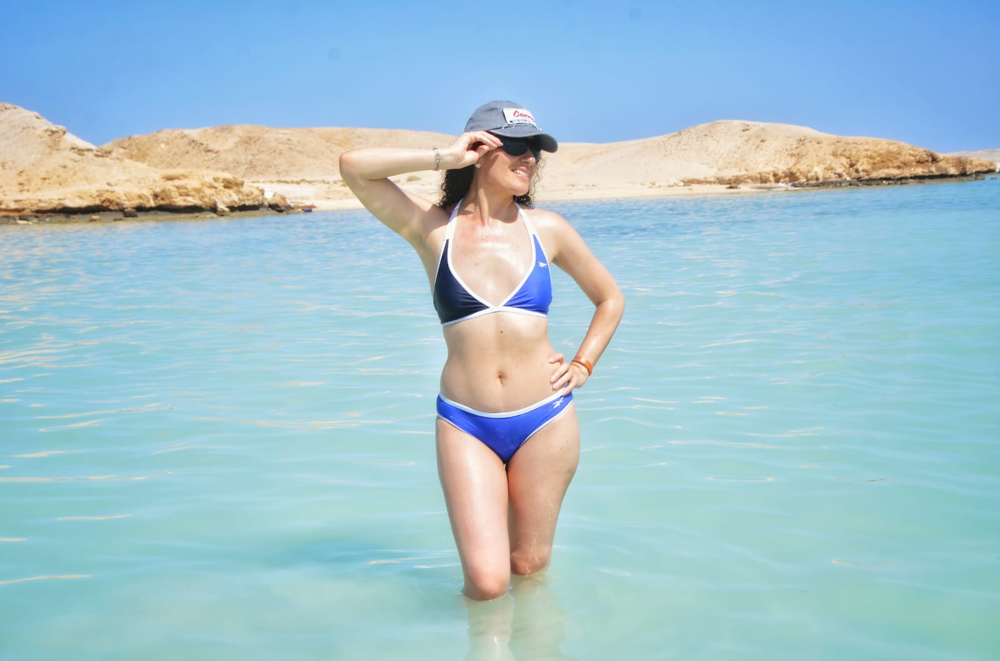
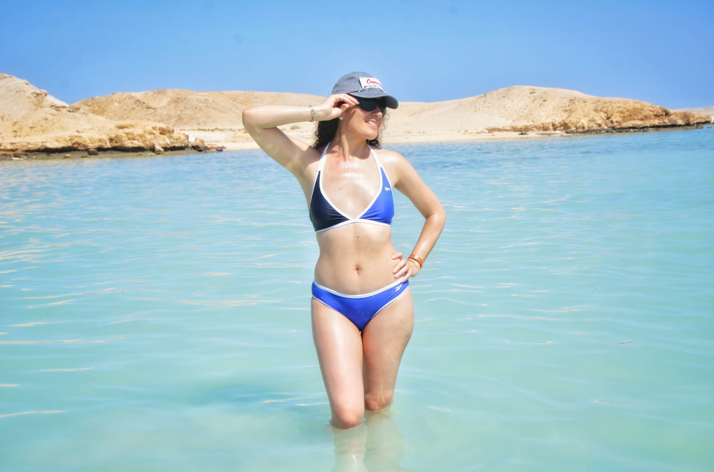

WHY EGYPT
Egypt, the cradle of civilisation
Egypt is known by names such as: “The mother of the world” or “Cradle of civilizations”, due to the different civilizations that have converged in its territory throughout history, from the different pharaonic dynasties to the times of greatest splendor of the Islam, all of them have left the country a heritage that deserves the attention of all humanity.
The country has gained international fame as the magical land of the pharaohs and pyramids. The Arab Republic of Egypt is a country located on two continents: Africa and Asia, because it includes the Sinai Peninsula, which belongs to the Asian region of the Near East.
PLACES
My favorite places in Egypt
The Great Pyramids
Built around 2600 BC over a span of about 27 years, the pyramid stands as the oldest of the Seven Wonders of the Ancient World. Remarkably, it is the only wonder that has remained largely intact through the ages, showcasing the architectural prowess and enduring legacy of the ancient civilization that constructed it.
Location
Al Haram, Giza Governorate 3512201, Egypt
Why to visit
The Great Pyramids of Giza are the greatest relics of Ancient Egypt and one of the most iconic man-made wonders on earth. They were built around 4,500 years ago, made to last for eternity to guide the divine Pharaohs into the afterlife. Today, they show off an astonishing wealth of mathematical and construction genius.
Abu Simbel Temple
Abu Simbel is an ancient temple complex, originally cut into a solid rock cliff, in southern Egypt and located at the second cataract of the Nile River. The two temples which comprise the site were created during the reign of Ramesses II (c. 1279 - c. 1213 BCE) either between 1264 - 1244 BCE or 1244-1224 BCE.
Location
Aswan Governorate, Egypt
Why to visit
The Abu Simbel temple was built for worshiping Pharaoh Ramses II as a god after his death and to display power to the recently conquered territory of Nubia. Notably, the temple features four colossal statues of Ramses II on its facade, each impressively carved to demonstrate the grandeur and might of his reign. This temple stands as a testament to his legacy.
Hurghada
Hurghada, a coastal city and the capital of Egypt's Red Sea Governorate, has evolved from a small fishing village into one of the largest resort destinations along the Red Sea coast, spanning nearly 40 km. This transformation has made it a key hub for tourism and economic activity in the region.
Location
Red Sea Governorate, Egypt
Why to visit
Hurghada boasts beautiful beaches and crystal-clear waters ideal for diving and snorkeling. Like Sharm El Sheikh, Hurghada was a tiny fishing village before Egypt's tourism boom in the 1980s. Today, it is a major tourist destination, attracting visitors from around the world to its stunning coastal landscapes and vibrant underwater life.
GALLERY
My photos from Egypt

.jpg) 
